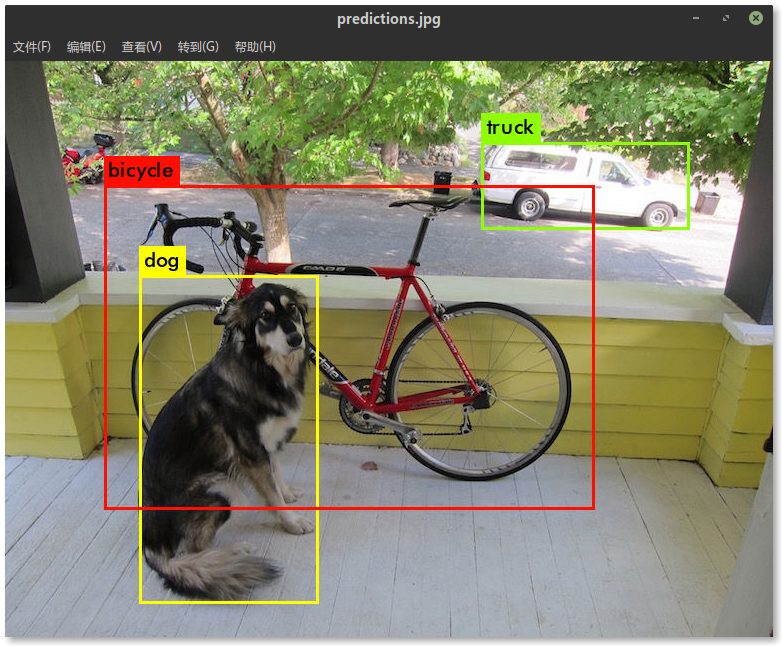

Darknet
Darknet is an open source neural network framework written in C and CUDA. It is fast, easy to install, and supports CPU and GPU computation.
For more information see the Darknet project website.
环境部署
服务器环境信息
OS: Ubuntu 16.04Kernel: x86_64 Linux 4.13.0-38-genericCPU: Intel Xeon CPU E5-2620 v3 @ 3.2GHzGPU: 双路 GeForce GTX 1080RAM: 32 GBCUDA: 8.0.61cuDNN: 7.0.5GCC: 4.9.4Python: 3.5
CUDA 及 cuDNN 环境配置
xxxxxxxxxxvi ~/.bashrc
追加以下内容:
xxxxxxxxxxexport PATH=/usr/local/cuda-8.0/bin:$PATH# 服务器环境 cuDNN 配置可能存在问题, 故自行配置如下路径export LD_LIBRARY_PATH=/path/to/your/cudnn-lib-files:$LD_LIBRARY_PATH# 例: export LD_LIBRARY_PATH=/server_space/zhaoym/cuda/tmp:$LD_LIBRARY_PATH
使配置生效:
xxxxxxxxxxsource ~/.bashrc
编译
克隆官方代码
xxxxxxxxxxgit clone https://github.com/pjreddie/darknet
切换到 darknet 目录, 修改 Makefile
xxxxxxxxxxcd darknetvi Makefile
GPU=1
CUDNN=1
OPENCV=0 # 若需检测视频等, 则修改为 1, OpenCV 配置方法略. . . . . . .
COMMON+= -DGPU -I/usr/local/cuda/include/ # 需根据服务器 CUDA 安装路径修改
CFLAGS+= -DGPU
LDFLAGS+= -L/usr/local/cuda/lib64 -lcuda -lcudart -lcublas -lcurand # 需根据 cuDNN 路径修改例:
COMMON+= -DGPU -I/usr/local/cuda-8.0/include/
LDFLAGS+= -L/server_space/zhaoym/cuda/tmp -lcuda -lcudart -lcublas -lcurand
xxxxxxxxxxmake # 编译
若编译失败需执行 make clean, 修改后重新 make 即可
判断是否配置成功
下载官方预训练权重
xxxxxxxxxxwget https://pjreddie.com/media/files/yolov3.weights
修改配置文件
xxxxxxxxxxvi cfg/yolov3.cfg
进行如下修改后保存退出
xxxxxxxxxx[net]# Testingbatch=1 # 取消注释subdivisions=1 # 取消注释# Training# batch=64 # 注释掉# subdivisions=16 # 注释掉
检测测试
xxxxxxxxxx./darknet detect cfg/yolov3.cfg yolov3.weights data/dog.jpg
输出如下
xxxxxxxxxxlayer filters size input output0 conv 32 3 x 3 / 1 416 x 416 x 3 -> 416 x 416 x 32 0.299 BFLOPs1 conv 64 3 x 3 / 2 416 x 416 x 32 -> 208 x 208 x 64 1.595 BFLOPs.......105 conv 255 1 x 1 / 1 52 x 52 x 256 -> 52 x 52 x 255 0.353 BFLOPs106 detectiontruth_thresh: Using default '1.000000'Loading weights from yolov3.weights...Done!data/dog.jpg: Predicted in 0.029329 seconds.dog: 99%truck: 93%bicycle: 99%
标注图片在项目根目录下, 名为 predictions.png

训练
下面以在西工大遥感数据集上训练模型为例演示如何训练自己的数据
数据集标注转换
下载数据集并放到 darknet目录下, 解压并将文件夹中的空格替换
xxxxxxxxxxunrar x NWPU\ VHR-10\ dataset.rarmv NWPU\ VHR-10\ dataset NWPU_VHR-10_datasetcd NWPU_VHR-10_datasetmv ground\ truth ground_truthmv positive\ image\ set positive_image_set
转换标注, 代码见 Github
xxxxxxxxxxpip install numpy opencv-python scikit-image PIL # 安装所需 Python 库mkdir labelspython nwpu_vhr_label.py
输出如下
x492 # 训练集数量158 # 测试集数量650 # 图片总数
输出文件有 tran.txt, val.txt 以及 labels 文件夹下的 650 个转换后的标注
darknet 默认标注文件与图片在同一目录, 故需将 labels文件夹下的 txt 复制到 positive_image_set 中
xxxxxxxxxxcp labels/*.txt positive_image_set
准备训练配置文件
xxxxxxxxxxcd ..mkdir 0913_NWPU_v3cd 0913_NWPU_v3mkdir backupcp ../cfg/yolov3-voc.cfg ./cp ../NWPU_VHR-10_dataset/*.txt ./
创建 NWPU.data 文件并写入以下内容
xxxxxxxxxxclasses= 10train = 0913_NWPU_v3/train.txtvalid = 0913_NWPU_v3/val.txtnames = 0913_NWPU_v3/NWPU.namesbackup = 0913_NWPU_v3/backup/
classes 类别数量 train 训练集文件列表 valid 验证集文件列表 names 类别名称文件 backup 权重存放目录
创建 NWPU.names 文件并写入以下内容
xxxxxxxxxxaeroplaneshipstorage_tankbaseball_diamondtennis_courtbasketball_courtground_track_fieldharborbridgevehicle
修改 yolov3-voc.cfg
xxxxxxxxxx[net]# Testing# batch=1 # 注释掉# subdivisions=1 # 注释掉#Trainingbatch=64 # 取消注释subdivisions=16 # 取消注释. . . . . .# 605, 689, 773 行的 filtersfilters=45 # (4个位置 + 1个objectness + C个类别) * 3, 只改 [yolo] 层上一层中的filters# 611, 695, 779 行的 classesclasses=10 # 类别数
开始训练
下载预训练文件
xxxxxxxxxxcd ..wget https://pjreddie.com/media/files/darknet53.conv.74
训练
xxxxxxxxxx./darknet detector train 0913_NWPU_v3/voc.data 0913_NWPU_v3/yolov3-voc.cfg darknet53.conv.74 -gpus 0,1
-gpus 指定训练使用的 GPU, 这里使用了第 0 块和第 1 块显卡
输出
xxxxxxxxxxlayer filters size input output0 conv 32 3 x 3 / 1 416 x 416 x 3 -> 416 x 416 x 32 0.299 BFLOPs1 conv 64 3 x 3 / 2 416 x 416 x 32 -> 208 x 208 x 64 1.595 BFLOPs2 conv 32 1 x 1 / 1 208 x 208 x 64 -> 208 x 208 x 32 0.177 BFLOPs......105 conv 45 1 x 1 / 1 52 x 52 x 256 -> 52 x 52 x 45 0.062 BFLOPs106 yoloLoading weights from darknet53.conv.74...Done!Learning Rate: 0.001, Momentum: 0.9, Decay: 0.0005Resizing320Loaded: 0.000029 secondsRegion 82 Avg IOU: -nan, Class: -nan, Obj: -nan, No Obj: 0.539972, .5R: -nan, .75R: -nan, count: 0Region 94 Avg IOU: 0.527418, Class: 0.748367, Obj: 0.665674, No Obj: 0.590720, .5R: 1.000000, .75R: 0.000000, count: 1Region 106 Avg IOU: 0.204739, Class: 0.530762, Obj: 0.475587, No Obj: 0.427459, .5R: 0.142857, .75R: 0.000000, count: 42Region 82 Avg IOU: 0.334140, Class: 0.682158, Obj: 0.326366, No Obj: 0.540248, .5R: 0.000000, .75R: 0.000000, count: 1Region 94 Avg IOU: 0.279358, Class: 0.548496, Obj: 0.595618, No Obj: 0.589648, .5R: 0.333333, .75R: 0.166667, count: 6Region 106 Avg IOU: 0.175368, Class: 0.478585, Obj: 0.391913, No Obj: 0.430448, .5R: 0.000000, .75R: 0.000000, count: 9......
注:
yolov3-voc.cfg配置文件中的batch和subdivisions需根据 GPU 显存大小修改, 若显存较小, 应相应地减小batch增大subdivisions查看显存占用可用
nvidia-smi, 输出如下xxxxxxxxxxWed Mar 13 15:36:29 2019+-----------------------------------------------------------------------------+| NVIDIA-SMI 384.111 Driver Version: 384.111 ||-------------------------------+----------------------+----------------------+| GPU Name Persistence-M| Bus-Id Disp.A | Volatile Uncorr. ECC || Fan Temp Perf Pwr:Usage/Cap| Memory-Usage | GPU-Util Compute M. ||===============================+======================+======================|| 0 GeForce GTX 1080 Off | 00000000:02:00.0 Off | N/A || 59% 83C P2 104W / 180W | 2729MiB / 8112MiB | 93% Default |+-------------------------------+----------------------+----------------------+| 1 GeForce GTX 1080 Off | 00000000:03:00.0 Off | N/A || 54% 81C P2 133W / 180W | 6861MiB / 8114MiB | 18% Default |+-------------------------------+----------------------+----------------------++-----------------------------------------------------------------------------+| Processes: GPU Memory || GPU PID Type Process name Usage ||=============================================================================|| 0 28529 C python 2719MiB || 1 2040 C python3 6851MiB |+-----------------------------------------------------------------------------+如果输出中全都是
-nan,count全为0问题很有可能在数据集上官方代码默认前
1000次, 每100次保存一次权重；1000次之后每10000次保存一次权重, 可在examples/detector.c的130及138行自行修改, 重新编译即可生效若训练中途停止, 将训练命令中的
darknet53.conv.74改为已得到的最新的权重的路径即可训练输出日志含义见此文
保存训练日志到文件追加tee命令, 例如
xxxxxxxxxx./darknet detector train 0913_NWPU_v3/voc.data 0913_NWPU_v3/yolov3-voc.cfg darknet53.conv.74 -gpus 0,1 | tee -a 0913_train.log
评估
生成检测结果
修改 yolov3-voc.cfg
xxxxxxxxxx[net]# Testingbatch=1 # 取消注释subdivisions=1 # 取消注释# Training# batch=64 # 注释掉# subdivisions=16 # 注释掉
使用 valid 命令，将验证集结果批量生成
xxxxxxxxxx./darknet detector valid 0913_NWPU_v3/NWPU.data 0913_NWPU_v3/yolov3-voc.cfg 0913_NWPU_v3/backup/yolov3-voc_10500.weights
输出如下
xxxxxxxxxxresults: Using default 'results'layer filters size input output0 conv 32 3 x 3 / 1 416 x 416 x 3 -> 416 x 416 x 32 0.299 BFLOPs1 conv 64 3 x 3 / 2 416 x 416 x 32 -> 208 x 208 x 64 1.595 BFLOPs2 conv 32 1 x 1 / 1 208 x 208 x 64 -> 208 x 208 x 32 0.177 BFLOPs......105 conv 45 1 x 1 / 1 52 x 52 x 256 -> 52 x 52 x 45 0.062 BFLOPs106 yoloLoading weights from 0913_NWPU_v3/backup/yolov3-voc_10500.weights...Done!Learning Rate: 0.001, Momentum: 0.9, Decay: 0.0005eval: Using default 'voc'4812......160Total Detection Time: 14.854030 Seconds
输出文件均保存在 results 目录下
计算 mAP
将西工大数据集转换为 VOC 格式, 代码: nwpu2voc.py
cd NWPU_VHR-10_dataset python nwpu2voc.py # 将 nwpu2voc.py 放到 NWPU_VHR-10_dataset 目录下
下载 reval_voc.py 和 voc_eval.py, 以下代码需在 Python2 环境下运行, 建议使用 Miniconda 管理 Python 环境, 需在 Python2 环境下安装 numpy
cd .. python reval_voc.py --voc_dir NWPU_VHR-10_dataset/VOCdevkit --year 2007 --image_set test --class ./0913_NWPU_v3/NWPU.names ./valid_results
输出如下
Evaluating detections VOC07 metric? Yes AP for aeroplane = 0.9949 AP for ship = 0.8182 AP for storage_tank = 0.8013 AP for baseball_diamond = 0.9827 AP for tennis_court = 0.8040 AP for basketball_court = 0.8182 AP for ground_track_field = 0.9947 AP for harbor = 0.7442 AP for bridge = 0.8961 AP for vehicle = 0.8689 Mean AP = 0.8723 -------------------------------------------------------------- Results computed with the **unofficial** Python eval code. Results should be very close to the official MATLAB eval code. -- Thanks, The Management --------------------------------------------------------------
更多信息参见 Darknet 评估训练好的网络的性能
其它参考资料
DarkNet-YOLOv3 训练自己的数据集 Ubuntu16.04+cuda8.0
后记
个人水平有限, 文章难免出现错误, 欢迎指出
如有问题可微信交流: zcybupt2016